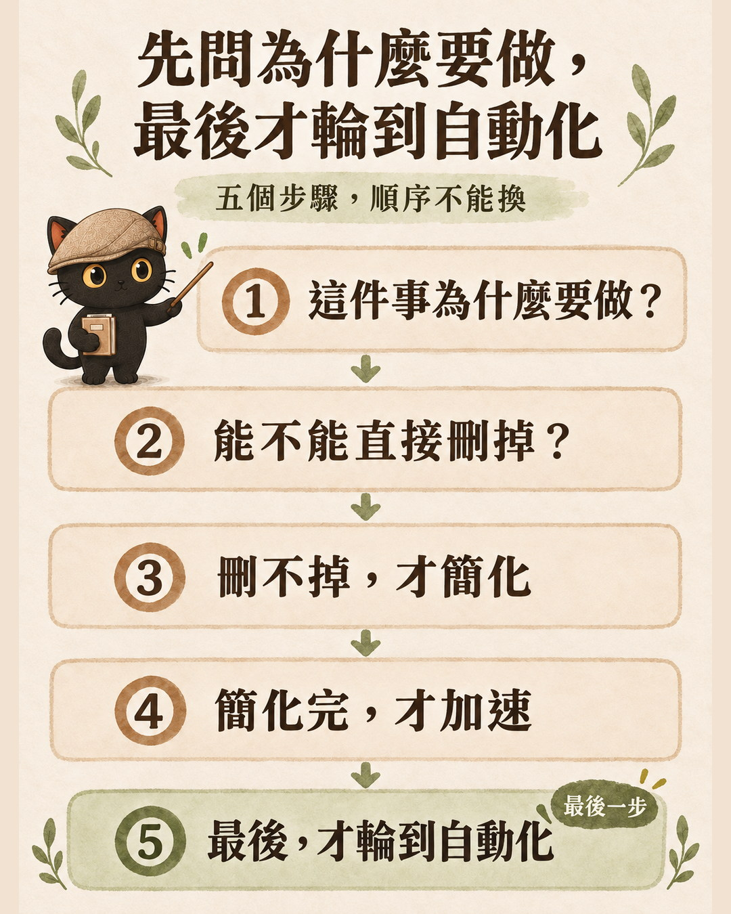
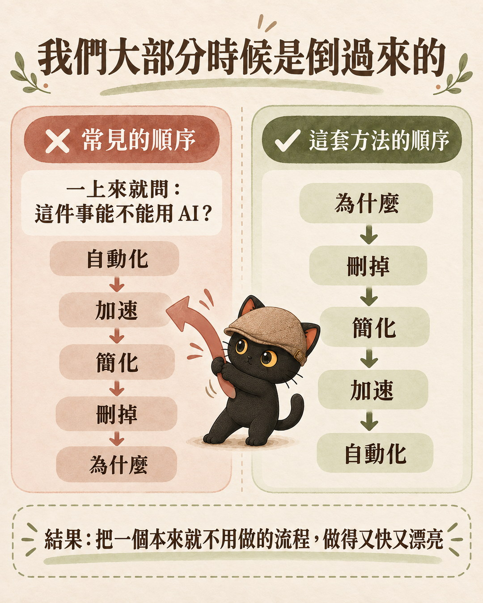
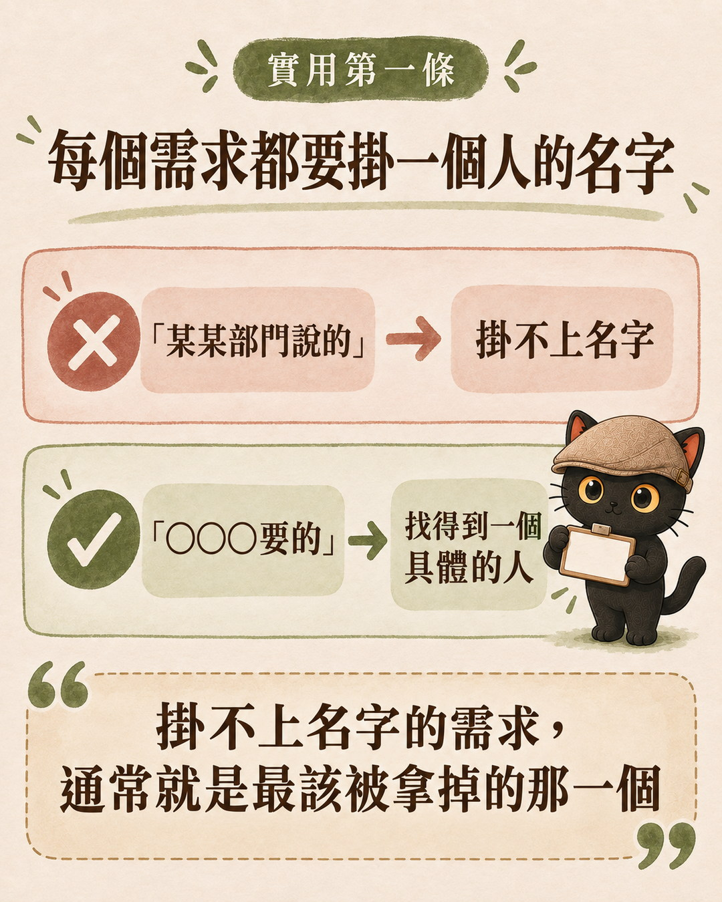
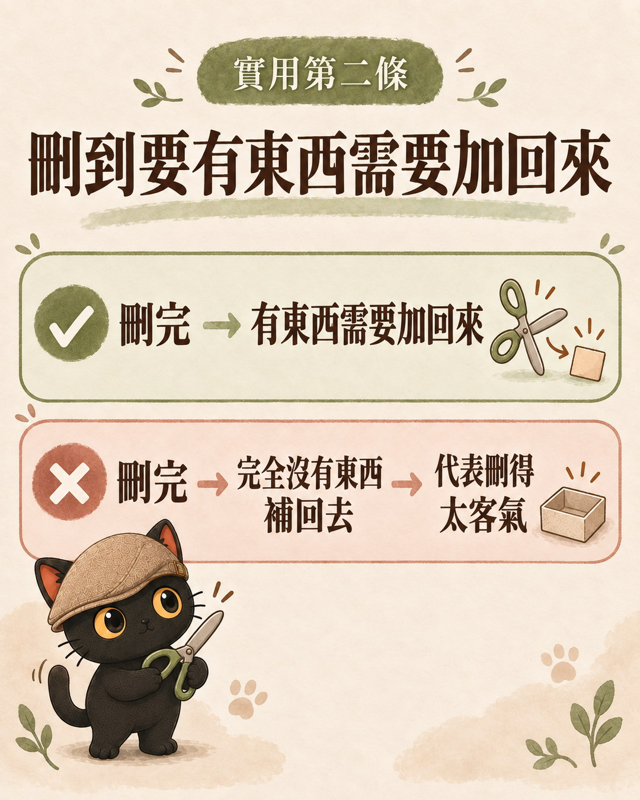

這篇在講什麼
一上來就問「這件事能不能用 AI」，常常是把一個本來不用做的流程，做得又快又漂亮。這篇整理馬斯克公開講過的五步工作法：先把需求變得沒那麼蠢，再刪掉，刪不掉才簡化，簡化完才加速，最後才自動化。回答第一步「為什麼要做」的時候，我用第一性原理來拆：把問題拆回事實、限制和假設。文末附上我做的免費技能包，你可以拿一件正想交給 AI 的事，今天就跑一次。
- 學了一堆 AI 工具，但不知道要拿來做什麼的人
- 每天都很忙，工具越裝越多，卻說不出哪件事真的有進展的人
- 要幫客戶或團隊導入 AI，想先確認哪些流程值得動的顧問與主管
- 五步工作法的英文步驟名稱、白話說法，和每一步動手前要問自己的一句話
- 兩條最實用的判準：需求要掛一個人的名字、刪到要有東西需要加回來
- 一段可以直接貼給 AI 的提示詞，加上免費的第一性原理技能包
一直在追效率，結果都在瞎忙
最近看到一則貼文在講 Tesla 內部的一套工作方法。五個步驟，順序不能換。
我們大部分時候是倒過來的，一上來就問這件事能不能用 AI。
我在一對一約談裡最常聽到的一句話是：「我學了一堆 AI 工具，但不知道要拿來幹嘛。」這句話背後就是同一個順序：先拿到工具，再回頭找地方用它。
馬斯克的五步工作法：先質疑需求，最後才自動化
這套方法是馬斯克自己講的。我目前能核對到的完整公開版本，是 2021 年 8 月 3 日 Everyday Astronaut（Tim Dodd）上架的 Starbase 導覽影片第一集，他在影片約 13 分 26 秒開始講，說這五步要照順序做。2023 年 Walter Isaacson 寫的傳記《Elon Musk》把它收進書裡，書中叫它「the algorithm」。
| 步驟 | 英文步驟名稱 | 白話 | 動手前問自己 |
|---|---|---|---|
| 1 | Make the requirements less dumb | 讓需求沒那麼蠢 | 這件事為什麼要做？是誰要的？ |
| 2 | Try very hard to delete the part or process | 用力刪掉零件或流程 | 能不能直接不做？ |
| 3 | Simplify or optimize | 刪不掉才簡化 | 留下來的能不能更簡單？ |
| 4 | Accelerate cycle time | 簡化完才加速 | 同一輪能不能更快跑完？ |
| 5 | Automate | 最後才自動化 | 前四步都做過了嗎？ |

我看到的那則貼文說是 Tesla 內部的方法。查下來，這套方法在 Tesla 和 SpaceX 兩邊都被提到：馬斯克是在 SpaceX 的 Starbase 現場講的，舉的反面例子是 Tesla Model 3 的生產線。後來前 Tesla 總裁 Jon McNeill 也寫了一本書叫《The Algorithm》專門講它，但方法本身是馬斯克先公開講的。
多數人先問能不能用 AI，順序剛好倒過來
自動化 → 加速 → 簡化 → 刪掉 → 為什麼。結果是把一個本來就不用做的流程，做得又快又漂亮。
為什麼 → 刪掉 → 簡化 → 加速 → 自動化。自動化的是真的需要留下來的那一段。

倒過來做的不只是我們。馬斯克在同一支影片裡說，他自己犯過好幾次這個錯，五步全部倒過來做：先自動化、再加速、再簡化，最後才刪掉。2018 年 Model 3 產能卡住的時候，他也在 X 上寫過：「沒錯，Tesla 過度自動化是個錯誤。精確地說，是我的錯誤。人類被低估了。」
- 讓 AI 只做需要判斷的事，其他交給程式｜四情境分工法，從完全沒套路到完全不變
這一段只講自動化要排在最後，那篇講走到第五步時，怎麼決定交給 AI 還是寫成程式。
最實用的兩條：需求要掛名字，刪到要有東西加回來
裡面有兩條我覺得最實用。
第一條，每個需求都要掛一個人的名字
不能是某某部門說的。馬斯克的意思是：任何需求或限制，都要來自一個具名、願意負責的人，不能只寫某個部門。
掛不上名字的需求，通常就是最該被拿掉的那一個。

第二條，刪到要有東西需要加回來
如果刪完完全沒有東西補回去，代表刪得太客氣。馬斯克講的數字是一成：如果你沒有至少一成的時候需要把東西加回來，代表你刪得不夠。這是用來判斷自己夠不夠敢刪的經驗法則。

用第一性原理，回答五步的第一步
五步的第一步「讓需求沒那麼蠢」，要回答的是：這件事到底為什麼存在？
馬斯克講五步的時候，沒有把它跟第一性原理綁在一起。這是我自己的用法：回答第一步的時候，我用第一性原理來拆。
馬斯克在 2012 年接受 Kevin Rose 訪談時講過第一性原理：不要用類比去推（別人都這樣做、以前都是這個價錢），要把事情拆到最根本、最確定的事實，再從那裡往上推。他舉的例子是電池：大家說電池包以前一度電要 600 美元，所以以後也差不多；他改成去拆電池是用哪些材料做的，算出原料大約只要 80 美元。
我做的第一性原理技能包，第一件事也是這個：把問題拆回事實、限制和假設。問題裡只要出現「大家都說」「通常」「業界慣例」，就先拆開，看哪些是真的，哪些只是習慣。
技能包裡有一段我寫的底層邏輯，剛好就是第二步：
- 馬斯克技能包：給創業者與主管的第一性原理顧問
這一段只講第一性原理怎麼接上五步，那篇講技能包的設計、邊界，和當初做過又收掉的自動更新。
我用第一性原理技能包，把八個專案篩成三個
我用這個技能包檢視過自己手上的專案。把每一個都攤給它看，請它用第一性原理幫我判斷。它分析完，我得到的結論是這一句：
這一次做的就是五步的前兩步：先問每個專案為什麼要做，再把問不出答案的刪掉。
- 學了一堆 AI 工具，不知道要拿來幹嘛？：你以為在做成品，其實在養十個半成品
這一段只放結論，那篇有我怎麼把專案攤給它看、它怎麼反問，和我後來留下哪幾個。
今天就能開始：拿一件你正想交給 AI 的事跑一次
挑一件你這週正想用 AI 或自動化處理的事，先不要找工具。把下面這段貼給你的 AI：
想要它問得更狠一點，就用技能包。
免費技能包：馬斯克 第一性原理
給創業者與主管的第一性原理對練夥伴。拆產品、拆市場、拆團隊與資源配置問題。也可以叫它靈魂考驗你，尖銳但不羞辱，而且有退場條件。
沒有公司、沒有團隊也能用。一件你正想交給 AI 的雜事，就可以拿來拆。
- 下載：GitHub：Jiang-Yude/musk-first-principles（免費、MIT 授權）
- 怎麼叫它：「用第一性原理拆這個問題」「檢查我的假設」「靈魂考驗我」
- 邊界：它不是馬斯克本人，也不扮演本人，不追蹤他最近說了什麼；投資、法律、醫療只給思考框架，不給決策指令